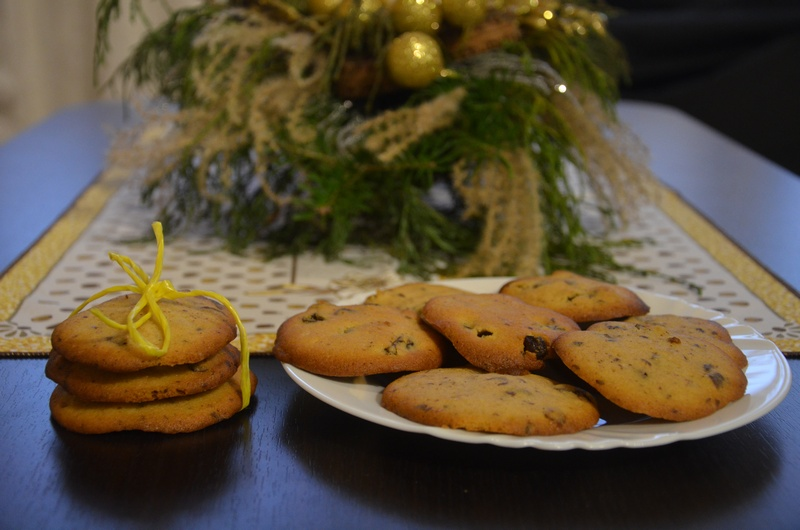

Tento recept mi poněkud pozvednul mé nízké pekařské sebevědomí. Abyste rozuměli - peču mnohem častěji, než by se z příspěvků ve Studentské kuchařce mohlo zdát. Většinou však své dílo nepovažuju za dostatečně reprezentativní (a kolikrát ani ne za dostatečně poživatelné :D), abych ho mohla vystavit vašim zrakům. Tentokrát mi však štěstí přálo a já vytáhla z trouby skvost. Pojďte si ho upéct se mnou ;-)!
- 180g změklého másla
- 1 hrnek hnědého cukru
- 2 malá vejce
- 50ml mléka
- 2 hrnky hladké mouky
- 2 lžičky prášku do pečiva
- 1/2 lžičky skořice
- špetka soli
- 1/2 hrnku nahrubo nasekaných oříšků (lískových, arašídů, pistácií…)
- 1/2 hrnku rozinek
- 8 kostiček hořké čokolády
Troubu si předehřejeme na 190°C a plech si vyložíme pečícím papírem. Změklé máslo utřeme s cukrem, vejci a mlékem, přimícháme mouku, prášek do pečiva, sůl a skořici. Do těsta přidáme oříšky a hrozinky a pro gurmány také nahrubo nasekanou čokoládu. Na plech lžící naneseme kopečky těsta ve vzdálenosti 4-5 cm (jinak by se nám cookies slepily k sobě). Dávka těsta mi vyšla přesně na 3 plechy po 12 sušenkách. Samozřejmě můžete dělat cookies i menší a budete jich pak mít víc :-). Pečeme ve vyhřáté troubě do zlatohněda cca 10-12 minut.

Vánoční cookies a v pozadí nejkrásnější handmade svícen (od strýca)
Na závěr snad jen malé upozornění - sušenky jsou tak dobré, že budete mít tendenci zbašit minimálně celý jeden plech na posezení. Tak bacha na to :-D!